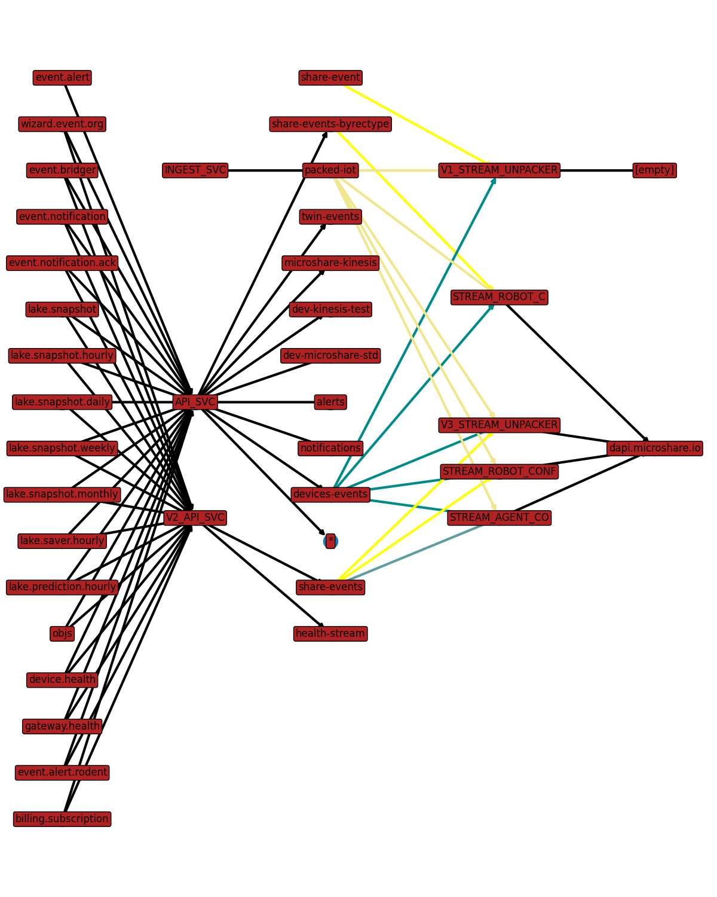
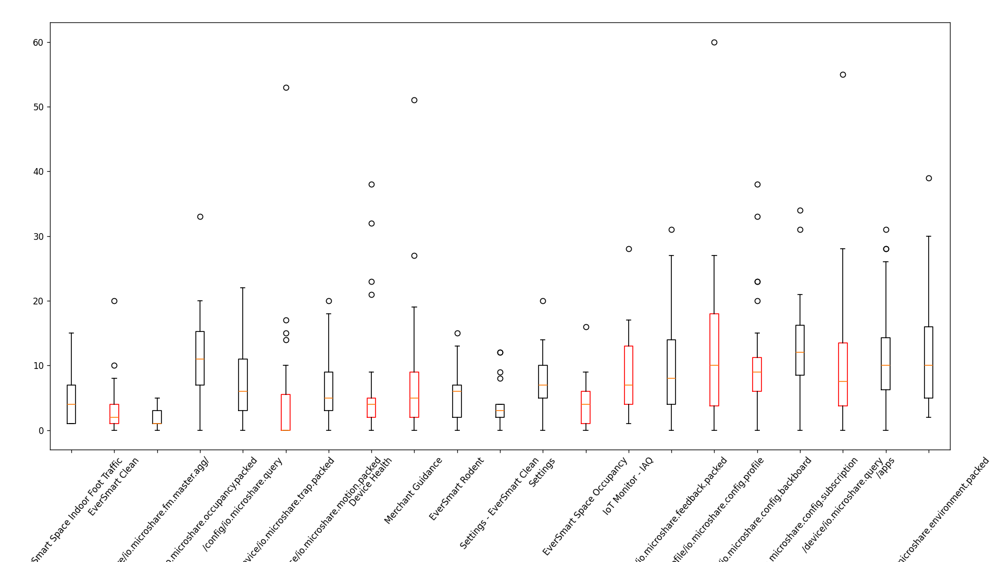
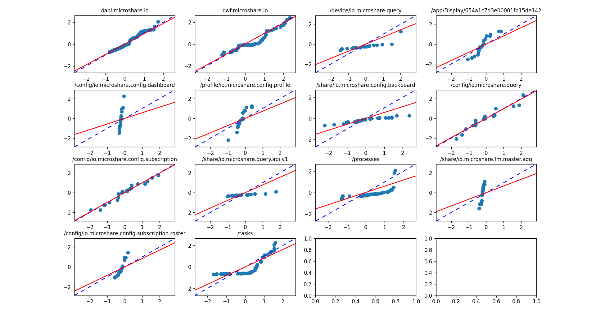

My internship at Microshare required me to develop some tools for internal use which might prove useful for others facing similar problems, so I’ve written the following document to explain their application and how they can most easily be modified for later use. The first of these is a tool that takes server config files and parses data out of them to plot a graph respresenting the overall datastream, the second is a script for identifying statistically significant changes in the latency of a web application. As-is, both contain some elements specific to the work I was doing at Microshare, so the aim of this document is to provide a short, straightforward explanation of how to reconfigure these tools for similar use cases.
This script is primarily useful for two purposes: first, as a quick reference for how Microshare’s servers relate to each other, and secondly to identify errors in configuration. The config files that this tool parses information from are generally quite large and tracking every connection between difference services can be tedious without creating some sort of overall view like this. If changes to the config files need to be made which affect these connections, this tool can be used to verify that the changes made have the desired effects. By pulling this information directly from the config files, this tool can ensure no configuration faults are introduced in complex server clusters.
Microshare’s server config files are structured such that one “ConfigMap” points to the file paths of the executable and config file for every server, and the individual config files contain information such as endpoint URLs, names of Kafka topics, and names of MongoDB collections accessed by a given server. These are structured such that there are two types of servers, which my code calls “ApiElement”s and “StreamElement”s respectively. An ApiElement reads data out of some set of Mongo collections and can make it accessible in some set of Kafka topics, while StreamElement reads information out of some set of Kafka topics and can be accessed from some number of endpoints.
This means Microshare’s servers can be organized into 5 layers, where each one moves data to the next: Mongo collections, ApiElements, Kafka topics, StreamElements, and API endpoints. On account of this, it makes sense to model these as a tree; ApiElement and StreamElement are subclasses of a TreeElement class which specifies a name, source file path, and a set of input and output TreeElements to model the non-server stages of the tree as well. When using the server map script, the user provides paths to the ConfigMap and every server config they’re interested in. The script will then use the information in the ConfigMap and and config file provided to populate a dict of TreeElements where whether a server is an ApiElement or StreamElement is identified by what labels the data inside uses. All of the inputs and outputs discovered are also added to the dict of TreeEleemnts along the way, and repeated names are used to update the input and output lists of non-server TreeElements. The script then iterates across this dict to organize it into a list of edges in a directed graph, and is plotted through MatPlotLib. Here is the state of Microshare’s development servers at the time of writing:

StreamElements here color-code their input edges according to the “group” it assigns to a Kafka topic; similar behavior could be added to any TreeElement by adding a method named “colorHandler” to its subclass. The TreeElement class also supports the creation of “invisible” elements which are skipped over when iterating through the graph and drawing edges so any arbitrary tree can be drawn, though this isn’t necessary for the current state of Microshare’s servers. If your servers follow a similar 5-layer architecture you’ll likely only need to change the config variable names and ConfigMap naming scheme to get this working for you. Otherwise this can still be of use but may require some more tinkering or new TreeElement sublasses, and in that case you should now be equipped to write that.
This is the more elaborate program of the two, to a point that an explanation of its step-by-step behavior like the previous section would likely be longer than its source code due to the background information on statistics that I would need to communicate for it to make much sense. However, this script is functionally a graphing calculator for data from JMeter, so this section is intended to explain the types of graphs implemented and how to interpret them when testing latency optimizations, treating the mathematical aspects of the program as a black box. For the uninitiated, JMeter is a free and open-source load testing tool with a robust UI for creating and running scripts of web requests of various protocols. For our purposes it will be used to send a standardized series of HTTP requests to an API and record the response times to a CSV file; an example JMeter test plan which does this can be found in the GitHub repository for this project.
These standardized requests can be tailor-made to replicate an expected “user load” to approximate how long it takes to load components of a web application. In my case, I made the tests from using my browser’s “network” tab while using Microshare applications to save the API requests made and copied these into JMeter. The test can be run repeatedly to arrive at a measurement of the average user’s load time. This tool adds some functionality to determine whether this load time is affected by some change in the underlying conditions of a load test and if so it can inform on the nature of that change. This can give some insight into the quality of the user experience and provide necessary guidance when trying to improve performance in complex web services.
From only one JMeter CSV, two types of plots can be generated: boxplots and histograms. The former is the default behavior of the script, drawing a set of box plots side-by-side along the same y-axis of latency. The histograms give a more detailed look at the shape of a distribution than the five-point summary discernible from a box plot. In order to make these plots useful, some behavior needs to be defined for how to organize the latency values into meaningful subsets. This is accomplished by defining a column of the data (or programmatically creating one) as an enumerated type indicating which column an entry belongs to. For example, the URL a request connects to is stored in the CSV data, so if the data is split along that column you should get a plot of normal distributions (indicated by the box plots having black outlines, or alternatively the shape can be observed in the histogram).
More substantial insights arise from comparing the data in one CSV file to another, so that changes in the server between runs of a latency test are reflected in the load times. These get split according to the same “EnumTable” logic and then the data in one subset can be compared to the latency data with the same enum value in the other file. Histogram plotting doesn’t support this, but the box plotting function takes the z-scores of the comparision data in each subset and scales it to the mean and standard deviation of the basic data to illustrate how the distributions differ between tests for each enum value. To this end, comparisions also support quantile-quantile (Q-Q) plotting, which graphs a linear regression between z-scores in each column. If the distributions are 1:1 identical, these z-scores will be highly correlated with a slope of 1, although any other slope indicates that the distributions have the same shape. The residuals of that linear regression are similarly plotted against a normal distribution to calculate how correlated the distributions are between two tests for each enum value.
The script prints out these correlations as a percentage to the command line CSV-formatted alongside the results file paths and their corresponding enum value. For comparing the distributions of more than 2 server setups, it’s useful to save this output to a file for a series of comparisions. Then, this correlation CSV can be used to create box plots of the correlation percentages of each enum value. The more this distribution is spread out, the more the performance of a column is affected by the variables changed between test runs, and higher average correlations indicate a column not having its distribution changed. If the distributions are similar, the mean and standard deviation of a column can be used to discern exactly how much a change impacted an enum value’s load time. Otherwise, while evidently changes affected the load time, the extent to which it did so will require more complex analysis and may or may not be unclear.
The example in this program’s GitHub repository was used to test all of its basic functionality; its requests were recorded from a browser using Microshare’s applications. Each of the JMeter test plans are slightly different in that they randomly select several applications to load in parallel in order to simulate different levels of user load. A shell script is provided which runs every JMeter test included, renders the histogram for every results file, then for every combination of two of them it renders the box plots and Q-Q plots. It writes the Q-Q plot output to a CSV file and once every combination has been run it creates the box plot of the correlations. Re-running this test exactly would require a login to Microshare’s development API, but an example of each type of plot from this run is provided in the GitHub repository.

This correlation plot serves as the “proof of concept” for the program; for every app being loaded or the resource requested it’s evident that the distributions are generally affected drastically by the user load. In this sense the program can be used for checking assumptions in developing latency tests by comparing the results of slightly different ones as well as actually performing them. These results would indicate that later tests need to control for the user load while running tests.The later part of my internship at Microshare concerned making recommendations for database optimizations on an as-yet unreleased application which was taking an unacceptably long time to load. This involved some minor changes to the script to adapt it to the new JMeter test, replacing the functionality for identifying the app being loaded with differentiating between the subdomain being accessed (all of the slowest requests were to the “workflow” subdomain as opposed to the API endpoint). However, unlike the proof of concept, the results being compared were dependent not on the JMeter test plan used but the changes made to the server. After a series of tests with different combinations of MySQL indexes and attempts to reduce unnecessary overhead, we ultimately found our solution while setting up a “control” server to test a new version of the application on. Consider these Q-Q plots comparing response times from an older server and this new one set up without any historical data migrated over yet:

These correlations might appear somewhat strong but in fact their residuals are very highly correlated, implying there is some significant lurking variable impacting the results. However, even the longest load times in this new distribution are faster than the slowest ones in the one with the historical data, and our previous tests on the old server showed higher correlation while getting progressively slower. This means that the deletion of historical data affects how long the database takes to search for data and that turning off automatic archival would change the distribution while altogether making the application load faster. This additonally led to the decision to not back up the historical data onto the new server, which hasn’t had the issue of progressively getting slower since, although the lurking variable(s) identified with the Q-Q plots indicate some other area(s) for improvement not found during my internship. In summary, this plotting tool allows for an objective trial-and-error approach in web application optimization, provided one understands the differences in initial conditions between their JMeter test runs.